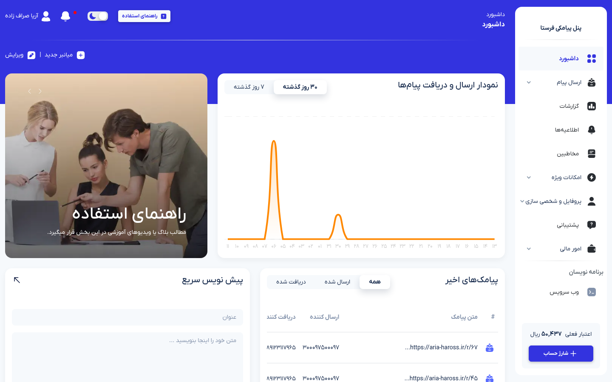
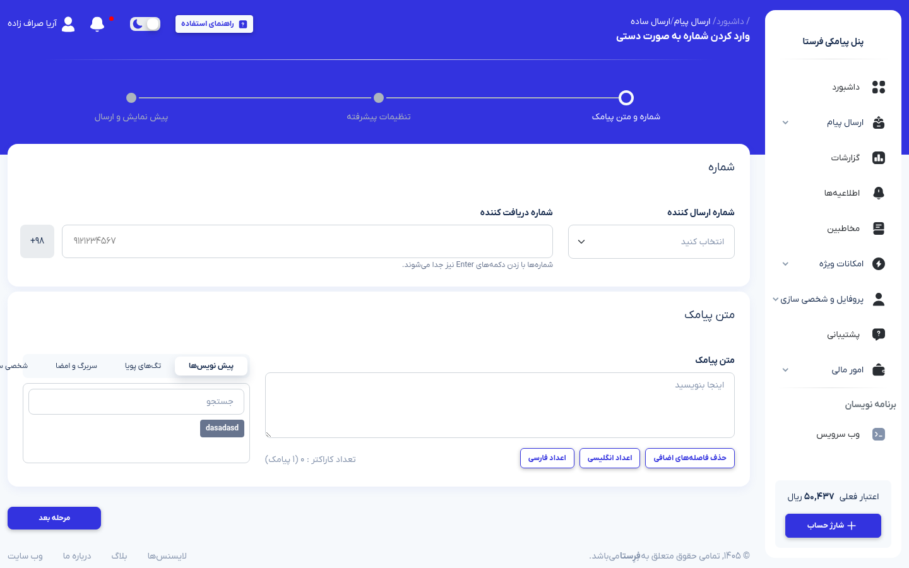
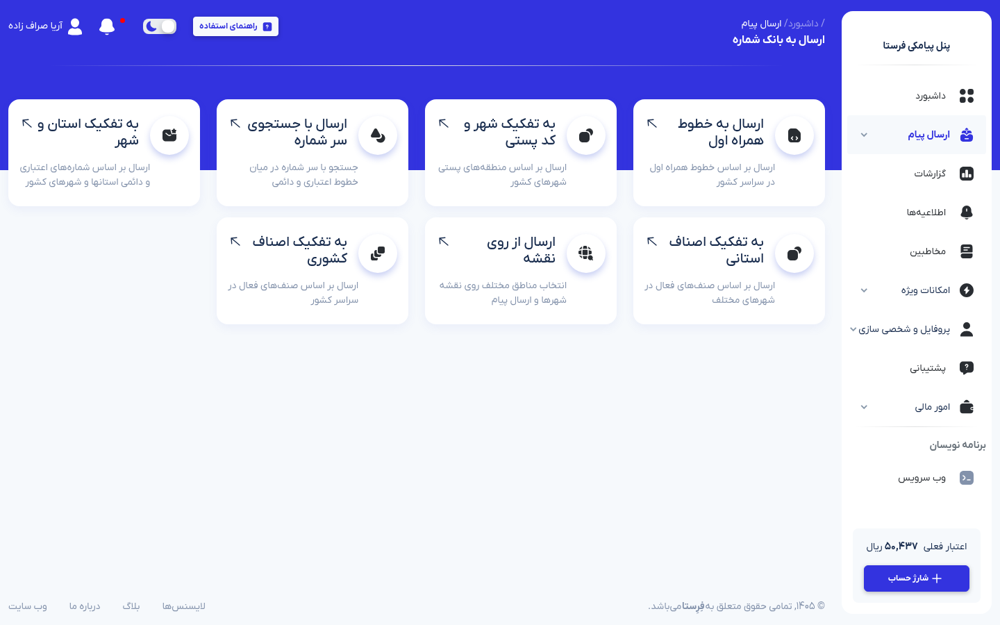
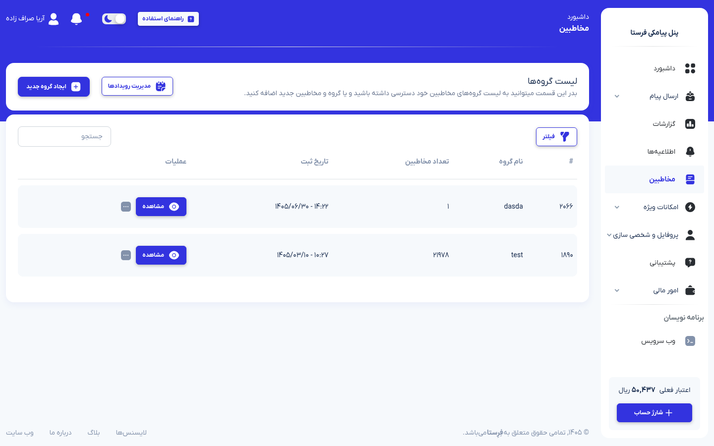
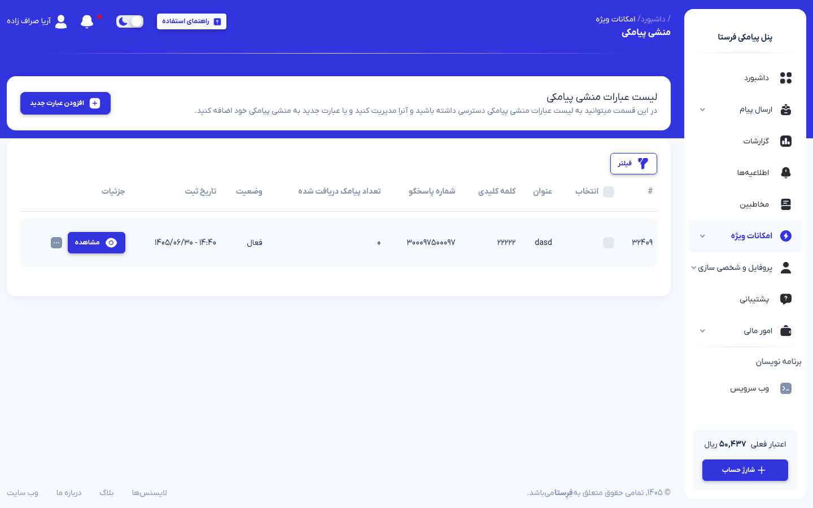
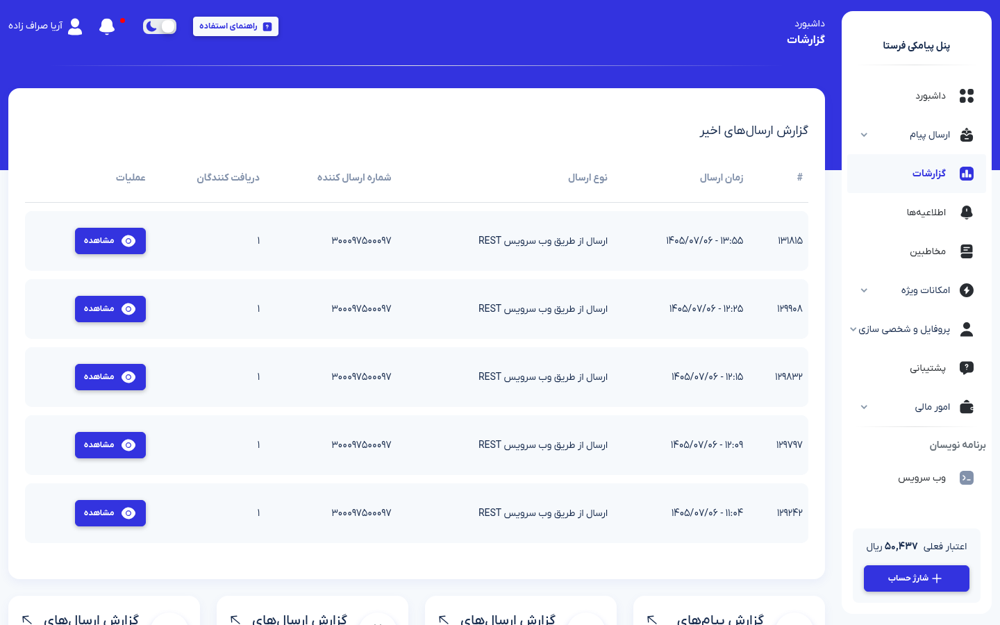
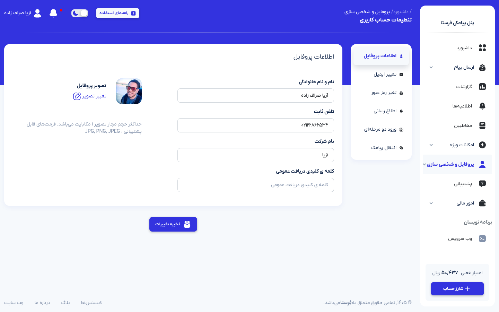

راهنمای جامع و کاربردی سامانه پیام کوتاه فِرِستا (PersiaFava)
سامانه پیام کوتاه فِرِستا (فرستا، رسا در رسانه)
آدرس ورود به پنل: https://panel.persiafava.com
پشتیبانی و امور مشترکین: سامانه تیکتینگ درون پنل کاربری
فهرست سرفصلها
- راهنمای جامع و کاربردی سامانه پیام کوتاه فِرِستا (PersiaFava)
- فهرست سرفصلها
- ۱. مقدمه و شروع سریع
- ۲. ثبتنام، ورود، امنیت و احراز هویت
- ۳. داشبورد مدیریتی و شاخصهای آماری
- ۴. راهنمای جامع ماژول ارسال پیامک
- ۵. دفترچه تلفن و مدیریت مخاطبین
- ۶. امکانات ویژه و تعاملی
- ۷. گزارشها، پیگیری وضعیت تحویل و خروجی اکسل
- ۸. تنظیمات حساب، شخصیسازی و امنیت پیشرفته
- ۹. امور مالی و افزایش اعتبار
- ۱۰. مرکز پشتیبانی و تیکتینگ
۱. مقدمه و شروع سریع
سامانه پیام کوتاه فِرِستا، زیرساختی مدرن، سریع و یکپارچه برای مدیریت ارتباطات پیامکی سازمانی، تبلیغاتی و خدماتی است. این سامانه با اتصال مستقیم به درگاههای معتبر اپراتوری (همراه اول، ایرانسل، رایتل و اپراتورهای ثابت) بستری پایدار جهت ارسال پیامکهای اطلاعرسانی، کدهای احراز هویت، کمپینهای تبلیغاتی منطقهای و پاسخگویی خودکار به مشتریان فراهم میآورد.
۲. ثبتنام، ورود، امنیت و احراز هویت
الف) ثبتنام در سامانه
برای ایجاد حساب کاربری جدید به آدرس صفحه ثبتنام مراجعه نمایید و مشخصات زیر را تکمیل کنید:
- نام کاربری (Username): شناسه ورود یکتا با حداقل ۳ کاراکتر انگلیسی یا عددی.
- رمز عبور و تکرار آن: کلمه عبور ایمن شامل ترکیب حروف بزرگ، کوچک و ارقام.
- نام و نام خانوادگی: نام کامل دارنده حساب منطبق با مدارک شناسایی.
- شماره همراه: شماره فعال بدون فاصله جهت دریافت کدهای تایید و پیامهای امنیتی.
- پست الکترونیکی: ایمیل معتبر برای مکاتبات و بازیابی کلمه عبور.
- پکیج کاربری: انتخاب بسته متناسب با برآورد حجم ارسال و تعرفه دلخواه.
پس از مطالعه و فعالسازی گزینه موافقت با قوانین، کد امنیتی را وارد کرده و بر روی دکمه ثبتنام کلیک نمایید.
ب) ورود امن به پنل
- در صفحه ورود، نام کاربری و رمز عبور خود را وارد کنید.
- فعالسازی گزینه «مرا به یاد داشته باش» نشست کاری شما را روی مرورگر ذخیره میکند.
- در صورت فراموشی کلمه عبور، از طریق صفحه فراموشی رمز عبور میتوانید لینک بازیابی را روی موبایل یا ایمیل خود دریافت نمایید.
ج) احراز هویت قانونی
- آدرس مستقیم در پنل: https://panel.persiafava.com/dashboard/profile/verify
مطابق با ضوابط سازمان تنظیم مقررات و ارتباطات رادیویی، پیش از ارسال پیامک عمومی باید مدارک هویتی تایید گردد:
- کاربران حقیقی: بارگذاری تصویر کارت ملی هوشمند، شناسنامه و تایید انطباق شماره همراه با کد ملی دارنده حساب.
- کاربران حقوقی و سازمانها: تصویر آگهی تاسیس و آخرین روزنامه رسمی، کد اقتصادی، شناسه ملی شرکت و معرفینامه رسمی نماینده بر روی سربرگ سازمانی.
۳. داشبورد مدیریتی و شاخصهای آماری
- آدرس مستقیم در پنل: https://panel.persiafava.com/dashboard
پس از ورود به سامانه، صفحه پیشخوان وضعیت کلی حساب کاربری و گزارشهای فوری را پیش روی شما قرار میدهد:

اجزای اصلی داشبورد:
- نوار بالایی (Top Header): دسترسی سریع به راهنما، تغییر تم تاریک و روشن، مشاهده اطلاعیهها در پیامهای سامانه و مدیریت پروفایل.
- نمایش آنلاین اعتبار ریالی (Sidebar Bottom): مشاهده لحظهای مانده حساب با امکان ورود مستقیم به صفحه شارژ حساب.
- نمودار ترافیک ارسال و دریافت: نمایش تحلیلی و آماری عملکرد پیامکها در دورههای ۷ روزه و ۳۰ روزه گذشته.
- جدول آخرین پیامکها: فهرست ۱۰ پیام اخیر به همراه متن، سرشماره ارسالکننده، گیرنده، ساعت ارسال و لینک پیگیری دلیوری.
- شمارندههای شاخص وضعیت:
- پیشنویس سریع: یادداشت و ذخیره پیامهای آماده.
- در صف تایید: پیامهای ارسالی در انتظار بازبینی محتوایی اپراتور.
- ارسال شده: پیامکهای مخابرهشده به شبکه ارتباطی.
- ارسال در آینده: پیامهای زمانبندیشده برای تاریخهای بعد.
- لیست سیاه (Blacklist): شمارههایی که پیامک تبلیغاتی خط خود را مسدود کردهاند.
۴. راهنمای جامع ماژول ارسال پیامک
قوانین و استانداردهای عمومی ارسال پیامک
۱. فرمت استاندارد شمارههای گیرنده در سامانه فرستا
- تمامی شمارههای گیرندگان باید به شکل ۱۰ رقمی بدون صفر اولیه و بدون پیششماره کشور وارد شوند (مانند
9121234567). - درج شماره با پیششمارههای
0912...یا+98912...در بخش دستی خطا محسوب میشود. - در کادرهای متنی، با فشردن کلید Enter یا استفاده از ویرگول (,) میتوانید شمارهها را از هم تفکیک نمایید.
۲. قواعد شمارش کاراکتر و صفحات پیامک
- متن فارسی:
- صفحه اول: تا ۷۰ کاراکتر (معادل ۱ پیامک)
- صفحه دوم: از ۷۱ تا ۱۳۴ کاراکتر (۶۷ کاراکتر به ازای هر صفحه بعدی)
- صفحه سوم و بالاتر: هر بخش ۶۷ کاراکتر
- متن انگلیسی:
- صفحه اول: تا ۱۶۰ کاراکتر (معادل ۱ پیامک)
- صفحه دوم: از ۱۶۱ تا ۳۰۶ کاراکتر (۱۵۳ کاراکتر به ازای هر صفحه بعدی)
- صفحه سوم و بالاتر: هر بخش ۱۵۳ کاراکتر
- نکته: وجود حتی یک کاراکتر فارسی یا کاراکتر ویژه در متن، ساختار کل پیام را فارسی محاسبه میکند.
۳. ابزارهای کمکی ویرایش متن
در بالای کادر نگارش متن، سه ابزار کاربردی برای بهبود پیام تعبیه شده است:
- حذف فاصلههای اضافی: پاکسازی خودکار فاصلههای زائد و نیمفاصلههای تکراری جهت جلوگیری از افزایش بیمورد صفحات پیامک.
- اعداد انگلیسی: یکدستسازی تمام ارقام به اعداد انگلیسی (مناسب کدها، شماره تماس و لینکها).
- اعداد فارسی: تبدیل تمام اعداد موجود در متن به ارقام فارسی جهت زیبایی بصری متون فارسی.
۱. ارسال ساده (Simple Send)
- آدرس مستقیم در پنل: https://panel.persiafava.com/dashboard/send/simple
این ماژول عمومیترین روش ارسال پیامک است و شامل ۳ شیوه ورود گیرندگان میباشد:
روش الف: وارد کردن شماره به صورت دستی
- آدرس مستقیم در پنل: https://panel.persiafava.com/dashboard/send/simple/manual

مراحل ۳ گانه ارسال دستی:
-
مرحله ۱: شماره و متن پیامک
- شماره ارسال کننده: خط مورد نظر (اختصاصی، خدماتی یا اشتراکی) را از فهرست انتخاب نمایید.
- شماره دریافت کننده: شمارهها را به فرمت ۱۰ رقمی (مثلاً
9121234567) درج کرده و کلید Enter را بزنید. - متن پیامک: متن را تایپ کنید؛ کاراکترشمار و تعداد صفحات همزمان محاسبه میشود.
- امکانات تکمیلی:
- فراخوانی سریع از فهرست پیشنویسها.
- اضافه کردن خودکار سربرگ یا امضای رسمی به پیام.
- استفاده از تگهای پویا.
- کلیک بر روی دکمه «مرحله بعد».
-
مرحله ۲: تنظیمات پیشرفته
- نوع ارسال (فوری یا زماندار): تعیین روز و ساعت دقیق ارسال برای انتشار در آینده.
- ارسال تدریجی (نوبتبندی / Throttle): تنظیم حجم ارسال در بازههای زمانی معین (مثلاً ارسال ۲۰۰ پیام در هر ۱۵ دقیقه) جهت کنترل تماسهای ورودی.
- حذف شمارههای تکراری: پالایش خودکار رکوردهای تکراری در فهرست ورودی.
-
مرحله ۳: پیشنمایش و ارسال نهایی
- مشاهده خلاصه سفارش شامل تعداد مخاطبان معتبر، صفحات پیامک، مجموع هزینه و مانده اعتبار پس از کسر. با تایید شما، ارسال آغاز میشود.
روش ب: ارسال از لیست مخاطبین
- آدرس مستقیم در پنل: https://panel.persiafava.com/dashboard/send/simple/contacts
در این شیوه نیازی به وارد کردن دستی شمارهها نیست:
- انتخاب خط فرستنده.
- انتخاب یک یا چند گروه از دفترچه تلفن ذخیرهشده.
- امکان انتخاب تمامی اعضای گروه یا گلچین کردن چند مخاطب خاص از جدول.
- درج متن پیامک، اعمال تنظیمات زمانبندی و تایید نهایی.
روش ج: ارسال از طریق آپلود فایل
- آدرس مستقیم در پنل: https://panel.persiafava.com/dashboard/send/simple/file
مناسب ارسال برای لیستهایی که در قالب فایل اکسل یا تکست آماده شدهاند:
- انتخاب خط ارسالکننده.
- استفاده از دکمههای دانلود نمونه فایل اکسل (
xls / xlsx) یا نمونه متنی (txt) جهت اطمینان از صحت ستونها. - بارگذاری فایل با کشیدن و رها کردن در کادر یا زدن دکمه «انتخاب فایل».
- بازبینی پیشنمایش شمارههای استخراجشده و تعداد کل رکوردهای معتبر.
- امکان افزودن شمارههای دستی تکمیلی در صورت نیاز و رفتن به گام بعدی.
۲. ارسال هوشمند (Smart Send)
- آدرس مستقیم در پنل: https://panel.persiafava.com/dashboard/send/smart

ارسال هوشمند برای کمپینهایی به کار میرود که هر پیامک دارای اطلاعات اختصاصی متغیر (مانند نام، مبلغ بدهی، شماره فاکتور یا کد پیگیری) برای هر شخص است:
۱. هوشمند داینامیک
- آدرس مستقیم در پنل: https://panel.persiafava.com/dashboard/send/smart/dynamic
- اتصال مستقیم به مشخصات ذخیرهشده در دفترچه تلفن مخاطبان.
- امکان درج تگهایی نظیر
{نام}،{نام خانوادگی}،{تلفن}در متن پیام که هنگام ارسال با اطلاعات واقعی جایگزین میشوند.
۲. هوشمند اکسل
- آدرس مستقیم در پنل: https://panel.persiafava.com/dashboard/send/smart/excel
- بارگذاری فایل اکسل شامل ستونهای دلخواه (مثلاً ستون نام، شماره مشتری، تاریخ موعد).
- تبدیل خودکار ستونها به تگهای متغیر (مانند
{#ستونB#}). - نگارش قالب یکپارچه: «جناب {#ستونB#}، موعد سرویس خودروی شما {#ستونC#} است.»
۳. هوشمند متناظر آپلود فایل
- آدرس مستقیم در پنل: https://panel.persiafava.com/dashboard/send/smart/equivalent-file
- بارگذاری فایلی که در هر سطر آن علاوه بر شماره موبایل، متن پیامک کاملاً منحصربهفرد همان شخص قرار گرفته است.
۴. هوشمند متناظر دستی
- آدرس مستقیم در پنل: https://panel.persiafava.com/dashboard/send/smart/equivalent-manual
- تعریف مستقیم چندین پیام متفاوت برای چند شماره مختلف در یک فرم، با زدن دکمه «اضافه کردن فیلد جدید».
۳. ارسال به بانک شماره کشوری و منطقهای
- آدرس مستقیم در پنل: https://panel.persiafava.com/dashboard/send/bank

برای بازاریابی و تبلیغات هدفمند در مناطق یا اصناف مختلف کشور، بانک اطلاعاتی فرستا روشهای زیر را ارائه میدهد:
الف) به تفکیک شهر و کد پستی
- آدرس مستقیم در پنل: https://panel.persiafava.com/dashboard/send/bank/postal-code
- انتخاب شهر مورد نظر از روی فهرست شهرهای تحت پوشش.
- درج ۳ تا ۵ رقم آغازین کد پستی منطقه و زدن دکمه جستجو.
- تفکیک نوع سیمکارت (دائمی، اعتباری یا هر دو).
- تعیین تعداد شماره و ردیف شروع، و انتخاب چینش (از اول به آخر یا برعکس).
- کلیک بر روی گزینه افزودن به سبد دریافت کنندگان جهت ارسال یکپارچه.
ب) خطوط همراه اول به تفکیک استان و شهر
- آدرس مستقیم در پنل: https://panel.persiafava.com/dashboard/send/bank/mci
- انتخاب استان و شهر مقصد با امکان فیلتر خطوط همراه اول دائمی یا اعتباری.
ج) ارسال با جستجوی سرشماره
- آدرس مستقیم در پنل: https://panel.persiafava.com/dashboard/send/bank/prefix
- جستجو و فیلتر بر اساس پیششمارههای اختصاصی اپراتوری در سراسر کشور.
د) بانک مشاغل و اصناف کشوری و استانی
- دستهبندی بر اساس صنف شغلی فعال (پزشکان، مهندسان، وکلا، املاک، ساختمان، فروشگاهها و بازرگانان).
هـ) ارسال از روی نقشه (BTS)
- انتخاب موقعیت مکانی و محلهها روی نقشه آنلاین جهت ارسال به شمارههای تحت پوشش دکلهای مخابراتی منطقه.
۴. مدیریت پیشنویسهای پیامک
-
آدرس مستقیم در پنل: https://panel.persiafava.com/dashboard/send/draft
-
امکان ایجاد و ویرایش پیامهای پرتکرار (مانند پیامک خوشآمدگویی، اعلام تعطیلی، آدرس یا مشخصات شبا).
-
در تمامی فرمهای ارسال و منشی، دسترسی فوری به پیشنویسها با یک کلیک فراهم است.
۵. دفترچه تلفن و مدیریت مخاطبین
- آدرس مستقیم در پنل: https://panel.persiafava.com/dashboard/groups

مدیریت گروهها
- ایجاد گروه جدید: با انتخاب گزینه «ایجاد گروه جدید»، میتوانید گروهبندیهای اختصاصی (مانند مشتریان ویژه، نمایندگان، پرسنل) بسازید.
- فهرست گروهها: شامل شناسه یکتا، نام، تعداد اعضا، تاریخ ثبت و دکمههای مشاهده اعضا، ویرایش نام یا حذف گروه.
۵ شیوه افزودن مخاطب به سامانه
در صفحه مخاطبان هر گروه، با زدن دکمه «افزودن مخاطب جدید» پنج مسیر متنوع برای اضافه کردن اطلاعات در اختیارتان قرار میگیرد:
graph TD
AddContact["افزودن مخاطب جدید"]
AddContact --> M1["۱. وارد کردن تکی (پروفایل اختصاصی و مناسبتها)"]
AddContact --> M2["۲. آپلود فایل (ورود دستهای اکسل و تکست)"]
AddContact --> M3["۳. انتقال از گروههای دیگر (کپی یا جابجایی انتخابی)"]
AddContact --> M4["۴. وارد کردن رنجی (تولید دامنه متوالی شمارهها)"]
AddContact --> M5["۵. وارد کردن دستی دستهای (پیست یکجای شمارهها)"]
۱. وارد کردن به صورت تکی
- ثبت دقیق مشخصات یک فرد:
- شماره موبایل (اجباری و ۱۰ رقمی بدون صفر).
- نام و نام خانوادگی فارسی (اجباری).
- جنسیت (جهت تطبیق خودکار پیشوند جناب آقای یا سرکار خانم در ارسالهای هوشمند).
- نام و فامیلی لاتین (اختیاری).
- اتصال تاریخ رویداد و مناسبت اختصاصی (تولد، سالگرد، تمدید بیمه).
۲. آپلود فایل
- مسیر آپلود گروهی: https://panel.persiafava.com/dashboard/send/smart/equivalent-file
- ورود فایلهای اکسل و متنی پرحجم شامل اطلاعات و شمارههای مشتریان.
۳. انتقال از گروههای دیگر
- انتخاب گروه مبدأ و تیکزدن مخاطبان منتخب جهت کپی یا جابجایی کامل به گروه مقصد.
۴. وارد کردن به صورت رنجی
- تعیین شماره شروع (مثلاً
9120000000) و شماره پایان (مثلاً9120000099) جهت تولید و ذخیره خودکار صدها شماره پیاپی.
۵. وارد کردن دستی دستهای
- کادر متنی برای کپی و جایگذاری همزمان لیستی از شمارهها؛ سامانه به صورت هوشمند شمارهها را از خطوط و ویرگولها شناسایی میکند.
عملیات و امکانات روی مخاطبین پس از ایجاد
در جدول مخاطبان گروه، امکانات زیر در دسترس است:
- عملیات گروهی (Bulk Actions): علامتزدن چند مخاطب جهت حذف، خروجی یا انتقال یکجا.
- فیلتر و جستجوی آنی: جستجوی فوری بر اساس نام، نام خانوادگی یا شماره تلفن.
- تنظیم تعداد نمایش: تغییر تعداد ردیفها از ۱۰ تا ۳۰۰ مخاطب در صفحه.
- ویرایش مخاطب: بهروزرسانی مشخصات و مناسبتهای ثبتشده برای هر فرد.
- حذف مخاطب: حذف رکورد از لیست گروه.
مدیریت رویدادها و مناسبتهای هوشمند
از طریق بخش «مدیریت رویدادها» در صفحه مخاطبین، میتوانید پیامهای مناسبتی را خودکار کنید:
- تعریف رویداد (تبریک تولد، سالگرد تاسیس، تاریخ سررسید بیمه، تمدید قرارداد).
- تعیین ساعت ارسال روزانه و انتخاب خط اختصاصی.
- سیستم در تاریخ معین، پیام شخصیسازیشده را بر اساس نام و جنسیت مخاطب به شکل خودکار ارسال خواهد کرد.
۶. امکانات ویژه و تعاملی
منشی پیامکی (SMS Assist)
- آدرس مستقیم در پنل: https://panel.persiafava.com/dashboard/specials/sms-assist

منشی پیامکی، خط اختصاصی شما را به سامانهای هوشمند برای پاسخگویی ۲۴ ساعته تبدیل میکند:
مراحل ایجاد منشی جدید:
- آدرس مستقیم فرم ایجاد: https://panel.persiafava.com/dashboard/specials/sms-assist/create
- مشخصات اولیه:
- تعیین عنوان منشی جهت دستهبندی.
- انتخاب خط اختصاصی پاسخگو.
- ثبت کلمه کلیدی (مانند ارسال عدد
1یا واژهکاتالوگ). - فعالسازی پاسخ خودکار و تایپ متن پیامی که بلافاصله به مخاطب ارسال خواهد شد.
- تنظیمات پیشرفته:
- افزودن خودکار شماره فرستنده به یک گروه مشخص در دفترچه تلفن جهت جمعآوری سرنخهای فروش.
- تعیین بازه زمانی فعالیت منشی.
- پیشنمایش و فعالسازی: بررسی نهایی و فعالسازی سرویس.
مسابقه، نظرسنجی و قرعهکشی
- مسابقه پیامکی: طرح سوال چهارگزینهای، تعیین گزینه صحیح و ارسال خودکار پیام امتیاز یا سپاسگزاری.
- نظرسنجی: دریافت نظرات و امتیازدهی مشتریان و استخراج نمودارهای درصدی در پنل.
- قرعهکشی و کدخوان: اعتبارسنجی کدهای محصول یا بنهای تخفیف با جلوگیری از ثبت کدهای تکراری.
نوبتدهی و تحلیلگر
- نوبتدهی: ارسال پیام تایید تاریخ، ساعت و نشانی به مراجعان، به همراه یادآوری خودکار پیش از زمان نوبت.
- تحلیلگر: گزارش بازدهی و نرخ تعامل مشتریان با پیامکهای ارسالی هر خط.
۷. گزارشها، پیگیری وضعیت تحویل و خروجی اکسل
- آدرس مستقیم در پنل: https://panel.persiafava.com/dashboard/reports

هر سفارش ارسال پیامک دارای شناسه پیگیری یکتا (Tracking ID) است:
انواع گزارشها:
- گزارش ارسالهای اخیر: نمایش آخرین بستههای ارسالی با جزئیات خط، زمان، هزینه و تعداد گیرندگان.
- پیامهای دریافتی (Inbox): صندوق ورودی پیامکهای مشتریان با امکان پاسخ مستقیم.
- پیامهای زمانبندیشده: تقویم پیامهای آینده با قابلیت بازبینی یا لغو پیش از موعد ارسال.
- گزارش وبسرویس: لاگ فراخوانی متدهای ارسالی از طریق وبسرویس.
- خروجی جامع اکسل و وضعیت دلیوری: امکان گزارشگیری در بازه زمانی دلخواه با تفکیک وضعیتهای زیر:
- رسیده به گوشی (Delivered): پیام با موفقیت روی دستگاه مخاطب تحویل شده است.
- رسیده به مخابرات (Sent to Telco): پیامک در صف اپراتور جهت تحویل قرار دارد.
- لیست سیاه (Blacklist): مشترک دریافت پیامک تبلیغاتی را مسدود کرده و هزینه آن طبق ضوابط به اعتبار کاربر بازمیگردد.
- ارسال ناموفق / خاموش: عدم دسترسی به خط یا خاموش بودن تلفن مخاطب.
۸. تنظیمات حساب، شخصیسازی و امنیت پیشرفته
تنظیمات پروفایل
- آدرس مستقیم در پنل: https://panel.persiafava.com/dashboard/profile/setting

- ویرایش اطلاعات تماس، نام تجاری، کلمه کلیدی دریافت عمومی و تصویر نمایه.
- تغییر رمز عبور: بهروزرسانی دورهای اطلاعات امنیتی ورود.
- ورود دو مرحلهای (2FA): افزایش ضریب امنیت حساب با الزام دریافت کد تایید پیامکی هنگام لاگین.
- تنظیم اعلانها: هشدارهای پیامکی کاهش اعتبار از حد معین یا ورود از آیپی جدید.
شخصیسازی پیشرفته پیامها
- آدرس مستقیم در پنل: https://panel.persiafava.com/dashboard/profile/message-customization
رفتار پیشفرض و لحن پیامهای ارسالی را متناسب با هویت برند خود یکپارچه کنید:
- پیشوندهای جنسیت مخاطب:
- پیشفرض مرد فارسی (مانند «جناب آقای»)
- پیشفرض مرد لاتین (مانند «jenabe aghaye»)
- پیشفرض زن فارسی (مانند «سرکار خانم»)
- پیشفرض زن لاتین (مانند «sarkar khanome»)
- سربرگ و امضای سرتاسری:
- متن سربرگ: متنی که در خط آغازین کلیه پیامها درج میشود.
- متن امضا: اطلاعات ثابت پایان پیام (مانند شماره تلفن یا وبسایت پشتیبانی).
- قالبهای پیشفرض هوشمند:
- تنظیم الگوهای تخصصی برای آژانسهای هواپیمایی، نمایندگیهای بیمه، آزمایشگاهها، صورتحسابهای مالی و تبریکهای مناسبتی.
انتقال پیامک و وبهوک
- انتقال به موبایل (SMS Forwarding): دایورت مستقیم پیامکهای دریافتی از مشتریان به شماره موبایل مدیر.
- وبهوک (Webhook URL): ارسال خودکار دادههای پیام دریافتی در قالب متد POST به آدرس سرور شما جهت ادغام با نرمافزارهای داخلی و سیستمهای CRM.
۹. امور مالی و افزایش اعتبار
- شارژ آنلاین حساب:
- آدرس ورود: https://panel.persiafava.com/dashboard/financial/charge
- تعیین مبلغ دلخواه به ریال، اتصال به درگاه پرداخت شاپرک و افزایش آنی اعتبار.
- ثبت فیش بانکی:
- آدرس ورود: https://panel.persiafava.com/dashboard/financial/register-slip
- ثبت شماره فیش واریزی، تاریخ و تصویر فیش در پرداختهای کارت به کارت، پایا یا ساتنا جهت تایید کارشناسان مالی.
- تاریخچه تراکنشها:
- آدرس ورود: https://panel.persiafava.com/dashboard/financial/history
- گزارش گردش مالی، مبالغ کسرشده کمپینها، مالیات بر ارزش افزوده و دریافت صورتحسابها.
۱۰. مرکز پشتیبانی و تیکتینگ
- آدرس مستقیم در پنل: https://panel.persiafava.com/dashboard/support
در صورت بروز هرگونه ابهام، پیگیری خطوط یا نیاز به خدماتیسازی:
- در صفحه پشتیبانی بر روی دکمه «ایجاد تیکت جدید» کلیک کنید.
- واحد مربوطه (پشتیبانی فنی، امور مالی یا فروش) و میزان اهمیت تیکت را تعیین نمایید.
- عنوان و شرح پیام را وارد کرده و در صورت نیاز، فایل یا اسکرینشات ضمیمه کنید.
- پاسخ کارشناسان از طریق همین بخش قابل پیگیری بوده و اطلاعرسانی پیامکی نیز انجام میشود.